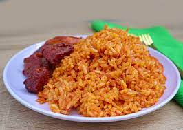

Jollof Rice

Description
Jollof rice is a beloved West African dish made by cooking rice in a rich blend of tomatoes, onions, peppers, and spices. Its vibrant red color and smoky flavor make it a centerpiece at parties, family gatherings, and celebrations.
Each region adds its own twist, but the essence remains the same: a hearty, flavorful one-pot dish that pairs well with fried plantains, grilled chicken, or fish. It's not just food—it's a cultural pride across Africa.
Ingredients
- 3 cups long-grain parboiled rice
- 4 large tomatoes (or 1 can of blended tomatoes)
- 2 red bell peppers
- 1 large onion
- 2 scotch bonnet peppers (optional, for heat)
- 3 tablespoons tomato paste
- 2 cups chicken stock
- 1 teaspoon thyme
- 1 teaspoon curry powder
- 2 bay leaves
- 1/4 cup vegetable or palm oil
- Salt and seasoning cubes to taste
Steps
- Rinse the rice in cold water and set aside.
- Blend the tomatoes, bell peppers, scotch bonnets, and half of the onion into a smooth paste.
- Heat oil in a pot, add the remaining chopped onions, and fry until golden.
- Add the tomato paste and blended mixture. Cook on medium heat until the sauce reduces and oil begins to show.
- Season with thyme, curry powder, bay leaves, salt, and seasoning cubes.
- Add chicken stock and stir well.
- Add the rice, cover, and let it cook on low heat until soft and fluffy, stirring occasionally.
- Once done, fluff the rice with a fork and serve with fried plantain, salad, or grilled chicken.
Home